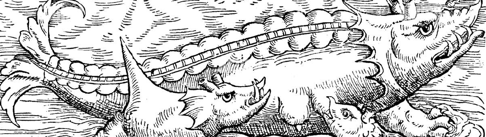

Primeros encuentros con seres fantásticos.
Mucha gente cree que el descubrimiento de fosiles ha sido algo reciente, puesto que los primeros documentos donde se establece el descubrimiento de estos restos se remonta hasta el año de 1676 aunque en otros varios documentos se discute si esto es cierto. Pues existe evidencia de que este descubrimiento pudo darse mucho antes, posiblemente en la época de la antigua Grecia, aunque también se duda de esto puesto que solo sobreviven fragmentos de este escrito realizado por Jenófanes y Heródoto. Aunque también existe la obra de los romanos de nombre "libres de les besties" o el libro de las bestias donde se describen las visitas de soldados romanos al territorio africano donde avistaron una gran cantidad de animales como elefantes, rinocerontes, leones y cocodrilos, aunque también se encontraron con huesos de animales como los de elefantes y también de dinosaurios los cuales sobesalian de los pozos de lodo o de la tierra, estos descubrimientos los plasmaron en su obra y los llamaron dragones.
Estos enuentros con fosiles y huesos gigantes de seres que nunca habian visto, los hicieron especular sobre a quien les pertenecian estos restos, en un incio se pensaron en gigantes y monstruos de gran tamaño que se alimentaman de carne humana, aunque esta idea empezo a cambiar cuando se encontraron los primeros craneos que no se asemejaban al de los hombres si no al de los reptiles por lo cual empezaron a pensar de que estos restos en realidad le pertenecian a dragones y monstruos marinos que hundian barcos y le servian a su dios Hades.
Todas estas depicciones eran las versiones más tempranas de lo que se convertirian en dinosaurios y mamiferos extintos, aunque la mayoria de estso dibujos y pinturas eran muy extrañas pareciendo seres de fantasia como eran dragones, serpientes marinas, lobos gigantes, elefantes del tamaño de montañas, los ciclopes, y los unicornios.